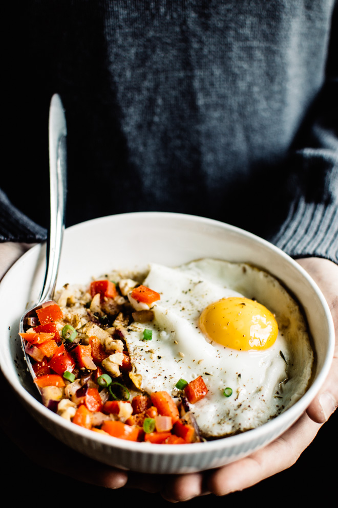
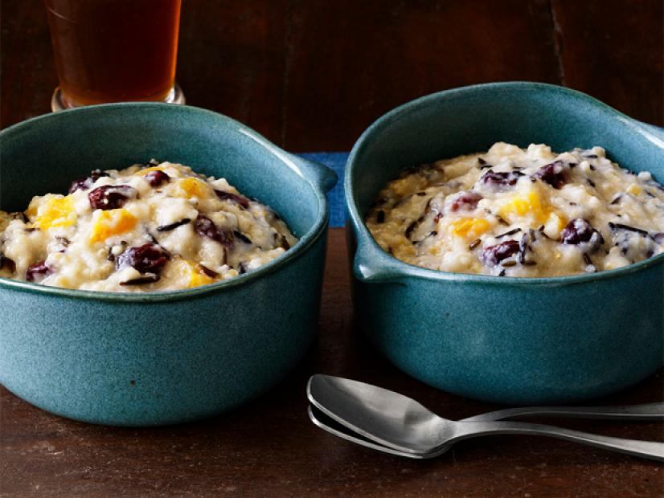
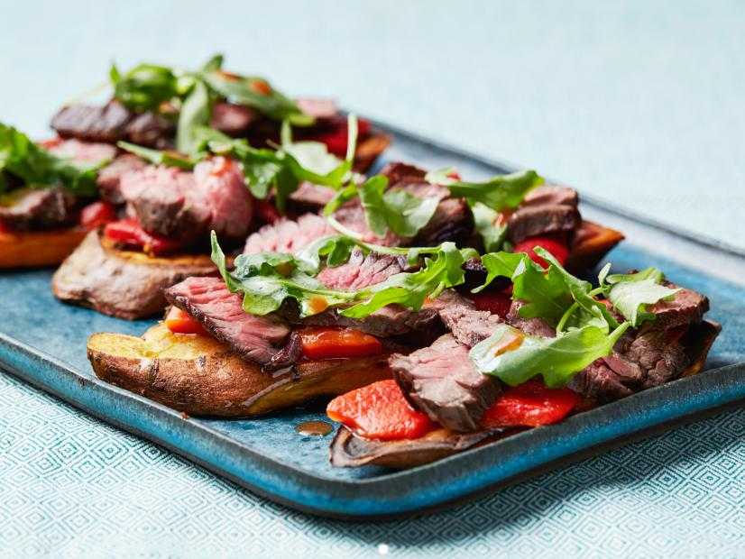
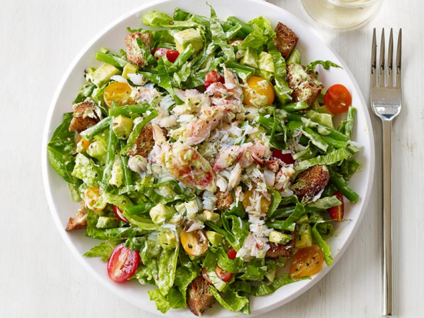
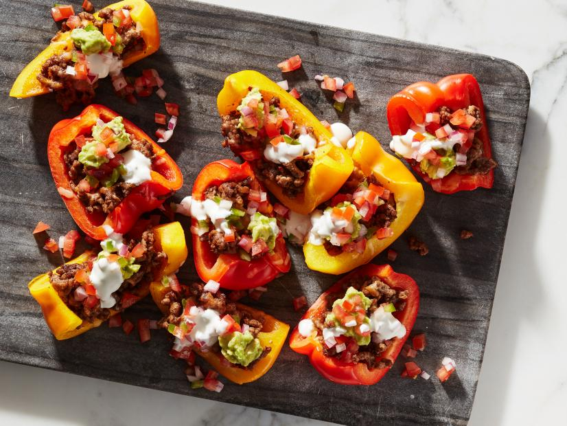
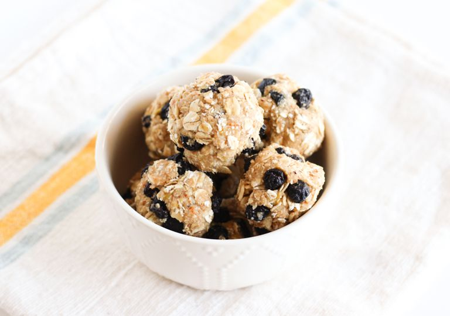
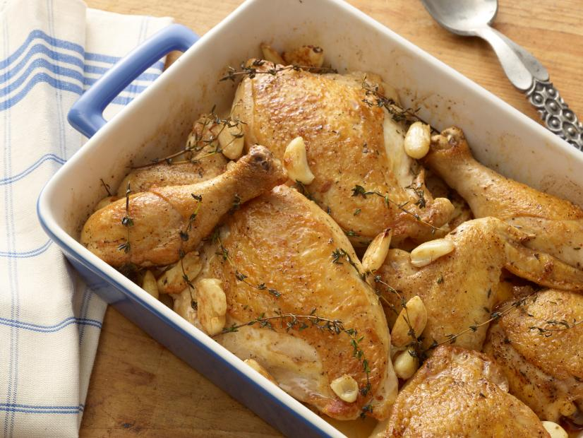
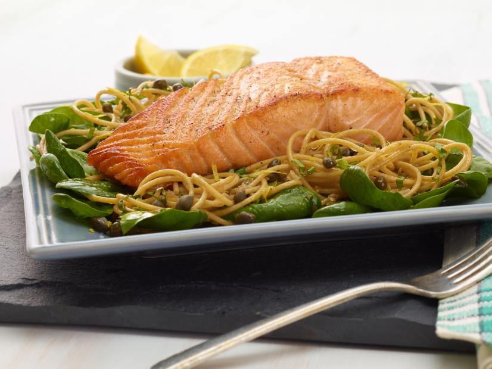

Home
Savory Oatmeal with Cheddar and Fried Egg

INGREDIENTS:
- 1/4 cup dry quick-cooking steel cut oats
- 3/4 cup water
- salt and pepper
- 2 tbsp shredded white cheddar cheese
- 1 tsp coconut oil, divided
- 1/4 cup diced red pepper
- 2 tbsp finely chopped onions
- 1 large egg
Optional Toppings:
- chopped walnuts
- sliced green green onions
- za'tar (or any other spice brand)
DIRECTIONS:
- Stove Top Method: Bring water to boil. Add oatmeal, reduce heat a little and let it cook for about 3 minutes, until all liquid is absorbed. Turn off heat and stir in cheese. A small pinch of salt and pepper.
- Microwave Method: Place oats and water in a microwave dish and paper towels to catch any spills. Microwave at a high setting (but not the highest, about 8/10 power setting) at 1 minute intervals for a total of 3 minutes. If you want a softer texture, continue microwaving at 30-second intervals. When the oatmeal is done, stir in shredded cheese, a small pinch of salt, and pepper.
- Heat a nonstick pan with 1/2 tsp of coconut oil over medium-high heat. Add vegetables and cook for 2-3 minutes, until they soften. Spoon vegetables over cooked oats. Reduce heat to medium.
- Add remaining 1/2 tsp of oil and fry egg. Cook until the whites are no longer translucent and serve over oatmeal.
- Top with chopped walnutes, green onions, and za'atar, if you like.
Whole Grain Breakfast Porridge

INGREDIENTS:
- 1/2 cup red or wild rice
- 1/2 cup steel-cut oats
- 1/4 cup pearl barley or farro
- 1/2 cup farina or wheat cereal
- 1 2-inch piece orange peel
- 1 cinnamon stick
- 1 2-tbsp packed dark or light brown sugar
- 1/4 cup dried fruit (cranberries, cherries, rasins and/or chopped apricots)
- 1/4 tsp salt
- chopped nuts, maple syrup and/or milk, for serving (optional)
DIRECTIONS:
- Up to 12 hours before serving, put the rice, oats, barley and farina in a 6-to-10 cup rice cooker. Stir in the orange peel, cinnamon stick, sugar, salt and 5 cups of water. Add the dried fruit.
- Close the cooker, set the timer and program for the porridge cycle so that breakfast is ready at the desired time. (If you don't have a porridge setting on your rice cooker, program for 50-55 minutes).
- Serve the warm porridge with nuts, syrup and/or milk, if desired.
Sweet Potato Toast with Steak, Roasted Peppers and Arugula

INGREDIENTS:
- 2 medium sweet potatoes (about 1 lb total)
- 1 tbsp extra0virgin oiive oil, plus more for drizzling
- kosher salt and freshly ground pepper
- 3 ounces deli-sliced roasted red bell peppers, drained (about 1/3 cup)
- 4 oz cooked sirloin or skirt steak, thinly sliced
- 1/3 cup arugula or watercress
DIRECTIONS:
- Preheat the oven to 450 degrees F.
- Slice off the 4 long sides of each of the sweet potatoes so the potatoes are squared off and sit flat on a cutting board. Slice the potatoes lengthwise into 1/2 inch-thick planks, about 5-inches-by-2-inches (you should get 3 planks per sweet potato). Combine the sweet potatoes, oilve oil and a pinch of salt in a medium bowl and toss gently to coat. Spread them out on a baking sheet and roast, flipping halfway through, gently to coat. Spread them out on a baking sheet and roast, flipping halfway through, until lightly browned and tender when pierced with a knife, about 15 minutes. Remove the sweet potato toasts to 2 plates.
- Divide the peppers among the toasts, then top the steak. In a small bowl, toss the arugula with a drizzle of olive oil and dash of hot sauce, then distribute over steak. Season each toast with salt and a couple of grinds of black pepper. Serve immediately.
Cook's Note:
You can make the toasts in advance and refrigerate them in an airtight container up to 4 days. Reheat in a toaster until warmed through.
Crab Avocado Salad

INGREDIENTS:
- kosher salt
- 1/2 lb haricots verts or green beans, halved
- 2/3 cup low-fat plain yogurt
- 3 tbsp low-fat mayonnaise
- 1-2 tbsp fresh lemon juice
- 1/2 cup chopped fresh baisl
- 3 anchovy fillets, chopped
- 1/2 lb lump or claw crabmeat
- 1 Hass avocado, halved, pitted and diced
- 3 romaine hearts, chopped
- 1 1/2 cups whole-wheat croutons
- 1 pint cherry tomatoes, halved
DIRECTIONS:
- Bring a saucepan of salted water to a boil. Add the haricots verts and cook until crisp-tender, 3-5 minutes. Drain and run under cold water to stop the cooking.
- Puree the yogurt, mayonnaise, lemon juice, chives, basil and anchovies in a blender until smooth. Season with salt and pepper.
- Toss the crabmeat, half of the avocado and about 1 tbsp of the yogurt dressing in a bowl. Toss the avocado with the remaining dressing in a large bowl.
- Divide the romaine salad among plates, top with the tomatoes and place some of the crab mixture in a the center.
Bell Pepper Loaded Turkey Nachos

INGREDIENTS:
- olive oil spray
- 1 lb lean ground turkey
- 1 clove garlic, minced
- 1 tbsp chopped fresh cilantro or parsley
- 1 tsp garlic powder
- 1 tsp cumin powder
- 1 tsp kosher salt
- 1/4 cup tomato sauce
- 1/2 cup chicken broth
- 21 mini rainbow peppers, halved and seeded (about 12 oz seeded)
- 1 cup sharp shredded cheddar cheese
- 2 tbsp light sour cream, thinned with 1 tbsp water
- 2 tbsp sliced black olives
- 1 jalapeno, sliced thin (optional)
- chopped cilantro, for garnish
DIRECTIONS:
- Preheat oven to 400F and line a large baking tray with parchment or aluminum foil. Lightly spray with oil.
- Spray oil in a medium nonstick skillet over medium heat.
- Add onion, garlic and cilantro and saute about 2 minutes, add ground turkey, salt, garlic powder, cumin and cook meat for 4-5 minutes unto=il meat is completely cooked through. Add 1/4 cup tomato sauce and chicken broth, mix well and simmer on medium for about 5 minutes, remove from heat.
- Meanwhile, arrange mini peppers in a single layer, cut-side up close together.
- Fill each with cooked ground turkey mixture, then top with shredded cheese and jalapeno slices, if using.
- Bake 8-10 minutes, until cheese is melted.
- Remove from oven and top with black olives, sour cream and cilantro. Serve immediately.
Lemon Blueberry Energy Bites

INGREDIENTS:
- 1 cup sliced almonds
- zest and juice of 1 lemon
- 1/4 cups quick cooking oats or use large for more texture - gluten free if necessary
- 1/2 cup dried blueberries
DIRECTIONS:
- In a food processor, process almonds, lemon zest, juice and honey until smooth (this can take a few minutes).
- Add in half the oats and process again until smooth.
- Store in the refrigerator for 1-2 weeks or freeze for up to 6 months.
- To mix things up and add more protein try swapping 1/4 cups of oats for chia seeds, hemp seeds or ground flax.
40 Cloves and a Chicken

INGREDIENTS:
- 1 hole chicken (broiler/fryer) cut into 8 pieces
- 1/2 cup plus 2 tablespoons olive oil
- 10 sprigs fresh thyme
- 40 peeled cloves garlic
- salt and pepper
DIRECTIONS:
- Preheat oven to 350 degrees F.
- Season chicken with salt and pepper. Toss with a 2 tbsp olive oil and brown on both sides in a wide fry pan or skillet over high heat. Remove from heat, add oil, thyme, and garlic cloves. Cover and bake for 1 1/2 hours.
- Remove chicken from oven, let rest for 5-10 minutes.
Whole Wheat Spaghetti with Lemon, Basil, and Salmon

INGREDIENTS:
- 1/2 lb whole-wheat spaghetti pasta
- 1 clove garlic, minced
- 2 tbsp extra-virgin oil
- 1/2 tsp olive oil
- 4 (4oz) pieces salmon
- 1/4 cup chopped fresh basil leaves
- 3 tbsp capers
- 1 lemon, zested
- 2 tbsp lemon juice
- 2 cups fresh baby spinach
DIRECTIONS:
- Bring a large pot of salted water to a boil over high heat. Add the pasta and cook until tender but still firm to the bite, stirring occasionally about 8 minutes. Drain pasta and transfer to a large bowl. Add the garlic, extra-virgin oilve oil, salt, and pepper. Toss to combine.
- Meanwhile, warm the olive oil in a medium skillet over medium-high heat. Season the salmon with salt and pepper. Add the fish to the pan and cook until medium-rarem about 2 minutes per side, depending on the thickness of the fish. Remove the salmon from the pan.
- Add the basil, capers, lemon zest, and lemon juice to the spaghetti mixture and toss to combine, Set out 4 serving plates or shallow bowls. Place 1/2 cup spinach in each bowl. Top with 1/4 of the pasta. Top each mound of pasta with a piece of salmon. Serve immediately.